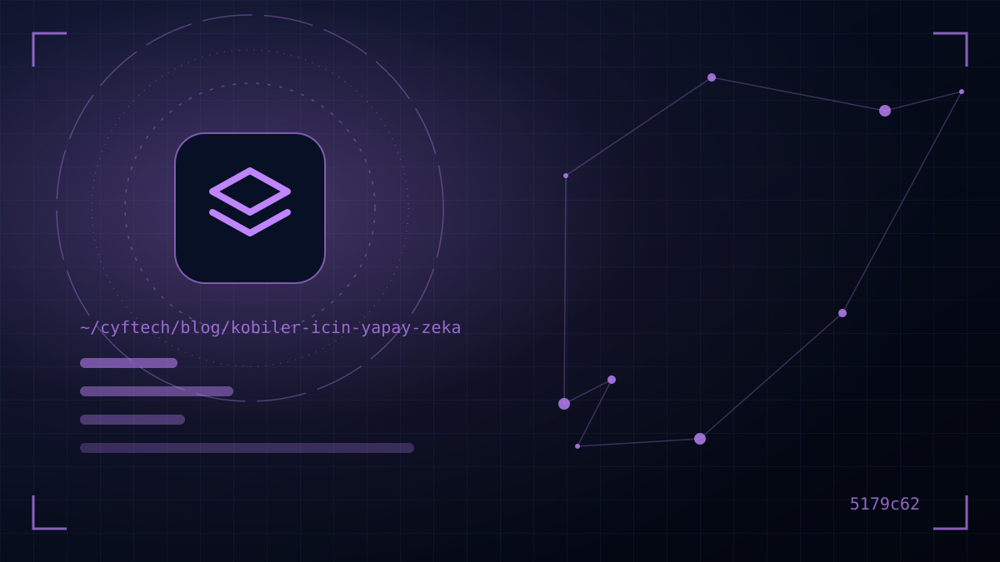

Ваш конкурент теперь готовит предложения не за полчаса, а за пять минут, отвечает клиентам даже в полночь и получает ежемесячный отчёт в один клик. За этим стоит не большой бюджет, а правильно применённый искусственный интеллект.
Для многих владельцев МСБ искусственный интеллект выглядит либо раздутой модой, либо дорогой технологией «не для нас». Между тем сегодня ИИ для малого и среднего бизнеса — вполне конкретный набор инструментов: начать можно с нескольких ежемесячных подписок, а при грамотной настройке он экономит часы каждую неделю.
В этой статье — актуальные данные о том, как используется ИИ в Турции, 10 сценариев, которые малый и средний бизнес может применить уже сейчас, юридические и практические риски, а также пошаговая дорожная карта для компании, начинающей с нуля.
Использование ИИ компаниями в Турции: данные 2026 года
Статистика искусственного интеллекта, опубликованная TÜİK в октябре 2026 года, показывает, что картина быстро меняется. Среди компаний с 10 и более сотрудниками доля использующих ИИ выросла с 2,7% в 2021 году до 7,5% в 2025-м и до 14% в 2026-м — то есть почти вдвое за год.
| Размер компании | Доля использующих ИИ (2026) |
|---|---|
| 10–49 сотрудников | %12,8 |
| 50–249 сотрудников | %17,0 |
| 250 сотрудников и более | %37,1 |
Разрыв заметен: в крупных компаниях доля использования почти втрое выше, чем в малых. Среди частных лиц доля пользующихся генеративным ИИ за тот же период выросла с 19,2% до 37,6% — то есть значительная часть ваших сотрудников уже пользуется этими инструментами в личной жизни.
72,3% компаний, которые думают о внедрении ИИ, но ещё не начали, главным препятствием называют нехватку экспертизы; за ней следуют правовая неопределённость и опасения о конфиденциальности данных. Короче говоря, проблема не в доступе к технологии, а в понимании, с чего начать.
Главное препятствие для МСБ в ИИ — не технология, а нехватка знаний и дорожной карты.
10 практических сценариев ИИ для малого и среднего бизнеса
Общее у этих направлений то, что начать можно без крупного проекта по разработке — чаще всего с готовыми инструментами или небольшими интеграциями:
Клиенты и продажи
- 1. Ассистент клиентской поддержки: чат-ассистент, отвечающий на частые вопросы с сайта и WhatsApp (цена, срок доставки, часы работы, статус заказа) и передающий сложные запросы человеку.
- 2. Черновики предложений и писем: подготовка текста предложения, письма-напоминания и проекта договора за минуты с помощью шаблонов на основе вашего каталога и прошлых предложений.
- 3. Маркетинговый контент: описания товаров, посты в соцсетях, черновики статей и рекламные тексты. По бюллетеню TÜİK за 2025 год 46,5% компаний, использующих ИИ, применяют его в маркетинге и продажах — это самая распространённая цель в списке.
- 4. Анализ отзывов клиентов: группировка жалоб из отзывов Google, опросов и обращений в поддержку по темам; раннее выявление повторяющихся проблем.
Операции и финансы
- 5. Распознавание документов и ввод данных: автоматическое извлечение данных из счетов, накладных, бланков заказов и перенос в систему. Это также сокращает ошибки ручного ввода.
- 6. Бухгалтерия и предварительный контроль: по тому же бюллетеню 33,7% компаний, использующих ИИ, применяют его в бухгалтерии, контроле или финансовом управлении. Категоризация расходов, пометка нетипичных сумм, сводки движения денежных средств. Последнее слово всегда должно оставаться за вашим финансовым консультантом.
- 7. Прогноз остатков и спроса: прогнозирование сезонного спроса по историческим продажам, чтобы снизить риск избытка или нехватки товара.
- 8. Отчётность и анализ через вопросы: задавать вопросы на естественном языке, например «Какой товар чаще всего возвращали в прошлом месяце?», и получать таблицы и графики.
Команда и управление знаниями
- 9. Внутренний ассистент по знаниям: ассистент, работающий с регламентами, документацией по продуктам и FAQ; сокращает срок адаптации новых сотрудников.
- 10. Резюме встреч и переписки: составление списка задач по заметкам со встреч, краткое изложение длинных цепочек писем, перевод текстов на другие языки.
Готовые ИИ-инструменты или индивидуальная интеграция?
Есть три уровня работы МСБ с ИИ. Для большинства компаний правильный путь — начать с первого и подниматься выше по мере необходимости:
| Уровень | Пример | Когда подходит? |
|---|---|---|
| 1. Готовые инструменты | Универсальные чат-ассистенты, ИИ-функции, встроенные в офисные пакеты | Тексты, резюме, переводы, генерация идей; чтобы начать сразу |
| 2. Функции, добавленные в текущее ПО | ИИ-модули CRM, e-commerce и бухгалтерских программ | Если данные уже есть в используемой системе |
| 3. Индивидуальная интеграция | Ассистент, подключённый к вашим данным, распознавание документов, чат-бот, связанный с системой заказов | Если процесс уникален и объёмы высоки |
Третий уровень требует безопасного подключения ИИ к данным компании, системе заказов или складу. На этом этапе работа фактически превращается в проект индивидуальной разработки ПО: авторизация, ведение журналов, передача человеку при ошибке не менее важны, чем сама модель.
Риски использования ИИ: KVKK, точность и безопасность
ИИ — мощный помощник, но ответственность он на себя не берёт. Прежде чем начать, учтите следующие риски:
- Персональные данные: вставлять в универсальные инструменты имена и телефоны клиентов, медицинские сведения, зарплатные ведомости сотрудников — серьёзный риск с точки зрения KVKK. В ноябре 2025 года Ведомство по защите персональных данных опубликовало по этой теме «Руководство по генеративному ИИ и защите персональных данных».
- Трансграничная передача данных: большинство облачных ИИ-сервисов обрабатывают данные на зарубежных серверах. Статья 9 Закона № 6698 была изменена в 2024 году, появились новые механизмы трансграничной передачи, например стандартные договоры; проверяйте, на каких условиях каждый инструмент обрабатывает данные.
- Неверные, но уверенные ответы: модели ИИ иногда убедительно выдают несуществующие сведения. Критичный контент — цены, законодательство, технические требования — обязательно должен проверять человек.
- Коммерческая тайна: цены предложений, таблицы себестоимости и списки клиентов не следует передавать вне корпоративных тарифов, гарантирующих, что данные не используются для обучения моделей.
- Бесконтрольное использование: сотрудники, возможно, уже пользуются этими инструментами. Вместо запретов эффективнее написать короткую политику компании: какой инструмент, с какими данными и в какой работе можно использовать.
Как начать работу с ИИ? Дорожная карта из 5 шагов
Двигаться небольшими измеримыми экспериментами вместо масштабного проекта трансформации — значит держать под контролем и риски, и бюджет:
- Шаг 1 — Составьте карту времени: перечислите задачи, которые команда повторяет каждую неделю, и время на них. Лучшие кандидаты для ИИ — частые задачи с большим объёмом текста или данных.
- Шаг 2 — Выберите один пилот: например, «подготовка черновика первого ответа на письма клиентов». Сразу запишите критерий успеха: время ответа, затраченные часы, доля ошибок.
- Шаг 3 — Определите правила: какими данными можно делиться, какие результаты нельзя выпускать без одобрения человека? Напишите короткую политику использования.
- Шаг 4 — Тестируйте 4–6 недель и измеряйте: сравните показатели до и после пилота. Соберите отзывы команды; вы часто будете видеть, что менять нужно не инструмент, а процесс.
- Шаг 5 — Масштабируйте или откажитесь: если результат хороший, закрепите его и при необходимости интегрируйте с текущими системами. Если слабый — переходите к следующему направлению из списка.
Не принимайте решений без измерений
Оценивайте успех пилота по цифрам, а не по ощущениям. Например, если среднее время первого ответа на письма клиентов сократилось с четырёх часов до менее чем часа, а команда экономит несколько часов в неделю, сравнение этой экономии в месяц со стоимостью подписки облегчает решение. Так же фиксируйте долю ошибочных или требующих правки результатов; если она высока, проблема чаще не в инструменте, а в инструкциях или качестве исходных данных.
Вовлечь команду не менее важно, чем измерять. Те, кто будет пользоваться инструментом каждый день, лучше всех знают, где он действительно экономит время, а где добавляет работы. Короткое обучение, общий документ с удачными примерами инструкций (промптов) и десятиминутный еженедельный разбор заметно ускоряют внедрение.
Условие пользы от ИИ — упорядоченные данные. Если у вас нет системы, где заказы, клиенты и остатки фиксируются единообразно, разумнее сначала вложиться именно туда.
Примеры использования ИИ по отраслям
Одна и та же технология решает разные задачи в разных отраслях. Несколько типичных примеров:
- E-commerce: массовое создание описаний товаров, анализ причин возвратов, автоответы клиентам о статусе заказа. Если вы только начинаете в e-commerce, наше руководство по созданию интернет-магазина описывает основные шаги.
- Рестораны и кафе: понимать по данным продаж, какие блюда в какие дни и часы продаются лучше, планировать закупки продуктов, суммировать отзывы гостей.
- Услуги и консалтинг: резюме встреч, черновики предложений и отчётов, ассистент по внутренней базе знаний.
- Производство и торговля: анализ технической документации и спецификаций, сравнение предложений поставщиков, прогноз спроса.
- Управление жилыми комплексами: классификация обращений жильцов по темам, автоответы на частые вопросы, подготовка текстов объявлений.
Во всех этих примерах ИИ создаёт ценность как слой поверх уже работающей цифровой инфраструктуры. Примеры наших продуктов для ресторанов и управления жилыми комплексами можно посмотреть на странице наши проекты.
- Перечислены ли повторяющиеся задачи и затраты времени на них?
- Выбраны ли один процесс для пилота и критерий успеха?
- Зафиксировано ли письменно, какими данными делиться нельзя?
- Прочитаны ли условия обработки и хранения данных выбранного инструмента?
- Есть ли шаг одобрения человеком для критичных результатов?
- Подготовлена ли короткая политика использования для сотрудников?
Частые вопросы
В каких сферах МСБ чаще всего используют ИИ?
По статистике ИИ TÜİK за 2025 год самая распространённая цель среди компаний, использующих ИИ, — маркетинг и продажи (46,5%); за ними с показателями около 40% следуют производственные и сервисные процессы, НИОКР и управление бизнес-процессами, а бухгалтерия и финансовое управление — 33,7%. На практике МСБ часто начинают также с клиентской поддержки, обработки документов и отчётности.
Дорого ли использовать ИИ?
Для старта — не обязательно. Корпоративные тарифы универсальных ИИ-инструментов предлагаются по ежемесячной подписке за пользователя. Расходы растут при индивидуальных интеграциях с данными компании и при больших объёмах использования.
Заменит ли ИИ сотрудников?
В масштабе МСБ самый частый эффект — сотрудники освобождаются от рутины и уделяют больше времени клиентам и принятию решений. Контроль и ответственность всегда должны оставаться за человеком.
Нарушает ли KVKK ввод данных клиентов в ИИ-инструменты?
Передача персональных данных в такие инструменты без правового основания, уведомления и соблюдения условий трансграничной передачи рискованна с точки зрения KVKK. Рекомендуется изучить руководство Ведомства по защите персональных данных о генеративном ИИ и при необходимости получить мнение специалиста.
Сколько данных нужно, чтобы начать работу с ИИ?
Для генерации текста, резюме и переводов данные компании не нужны. А в прогнозировании, аналитике и внутренних ассистентах качество результатов напрямую зависит от упорядоченных и единообразно записанных данных.
В заключение
ИИ для малого и среднего бизнеса начинается не с больших бюджетов и сложных проектов, а с одного правильно выбранного процесса. Пока доля компаний в Турции, использующих ИИ, за год удвоилась, малый бизнес, начавший рано, получает серьёзное преимущество в скорости и клиентском опыте. Главное — держать данные в порядке, двигаться, понимая риски, и измерять результаты.
Если хотите обсудить, как подключить ИИ к вашему сайту, системе заказов или управления, напишите нам— вместе определим первый шаг, подходящий вашему бизнесу.
- TÜİK — Статистика искусственного интеллекта 2026 (новость CNBC-e)
- TÜİK — Статистика искусственного интеллекта 2026 (новость Bloomberg HT)
- TÜİK — Статистика искусственного интеллекта 2025 (Alomaliye)
- Турецкий статистический институт (TÜİK)
- KVKK — Руководство по генеративному ИИ и защите персональных данных (в 15 вопросах)